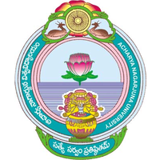

About Me
I am a passionate programmer pursuing Master of Science in Computer Science at The University of Texas at Dallas.
I have 2+ years of experience working as a senior software engineer with the multi-national IT consulting company Capgemini Technology Services. As a software developer in a team developing customization to an ERP module, I have developed software packages using variety of languages and technologies like Java, SQL, Python.
I am an experienced web application developer. I have designed and developed several web applications using feature rich frameworks like React and also by just using plain HTML, CSS and Javascript. I believe that the web is the best way to deliver a service to an end user, because of its ubiquitous nature and a web application is faster to develop as compared to a native application. Progressive Web Applications (PWA) excite me, as they close the gap between web applications and native applications. I am currently learning to build PWAs. This site you are viewing is also partly progressive :). I also build games for the web using plain TypeScript or libraries like P5.js.
From what you have read so far you might consider me as a front-end web developer, but I actually love programming, experimenting with technologies and do not like to be constrained to a particular domain. I have developed projects such as responsive single web apps, servers as microservices, a GraphQL server, a Relational database management system using plain Java, multi-threaded programs in C, automation scripts in Python, kernel level applications, schedulers, word level language models using deep learning techniques like LSTMs, word embeddings, and object detection, localization models using CNNs.
Coming to my hobbies, I like swimming and playing cricket, tennis. I have recently developed the habit of playing squash and wall climbing. I love reading and watching documentaries on historical events and learning about the causes leading to those events. And most importantly I binge Netflix if I find a series of my liking 😁.
Skills
Languages (those understood by machines)
- JavaScript(ES6)
- TypeScript
- Java
- C#
- Python
- C
- SQL
- HTML5
Server-side technologies
- Spring Boot
- ASP.NET core 3.1
- Node.js
- GraphQL
- REST
- Express.js
- MySQL
- MongoDB
Client-side Technologies
- Angular 10
- React.js
- Apollo
- Redux
- React Context & Hooks
- Angular Material
- Material-UI
- jQuery
- D3.js
- Bootstrap
- CSS
DevOps
- Azure DevOps
- CI/CD
- Docker
- Docker Hub
- Azure Kubernetes Service
Other tools and techniques
- Git
- GitHub
- GitHub Actions
- CI/CD
- Linux
- Scikit-learn
- Keras
- Matplotlib
Work Experience
Ohio-At-Home Healtcare Agency
Full Stack Web Developer Intern
Aug 2020 - Present
- Developed a full stack web app from scratch with ASP.NET core, XUnit, Angular, Docker and Azure Kubernetes Service.
- Used microservices architecture to achieve service decoupling and faster updates deployment. Used the Kubernetes engine to manage microservices. Deployed an Nginx Ingress Service to balance the load and enable TLS termination.
- Developed 6 microservices to process business logic and to report Kubernetes cluster health status. Used asynchronous communication between services using Azure Event Bus message queues.
- Developed an API gateway using ASP.NET core to route incoming traffic to a microservice. Implemented Azure AD based authentication and authorization on the API Gateway and the Angular client.
- Developed a responsive SPA with Angular 10 and Material design. Deployed the containerized app on Azure App service.
 The University of Texas at Dallas
The University of Texas at Dallas
Teaching Assistant
January 2020 - May 2020
- Teaching assistant for the senior year operating systems course. Tutored students on general OS and Linux concepts.
- Developed programming assignments and automated test scripts. Implemented research papers in C.
UT Dallas - Center for Education Outreach
Coding Instructor
August 2019 - November 2019
- Taught machine learning and data science concepts such as data preprocessing, data visualization, Image augmentation, Image classification, Transfer Learning using Keras library.
- Developed Machine learning algorithm along with the student for the Kaggle competition, APTOS 2019 Blindness Detection.
 Capgemini Technology Services
Capgemini Technology Services
Senior Software Engineer
May 2017 - May 2019
- Developed customizations to ERP module using Java, SQL, PL/SQL. Built robust and modular packages that received faster user acceptance.
- Gathered client requirements for the project, performed feasibility studies, and developed technical design documents.
- Researched and developed a browser-based package migration automation tool using JavaScript, HTML, CSS and batch programming and achieved a 70% reduction in package migration time.
- Developed Python automation scripts for package reorganization tasks which eliminated human errors and significantly reduced the time required for package reorganization.
- Received the project STAR award in 2018 for prompt and efficient solutions delivered as part of the engagement.
Education
The University of Texas at Dallas
Dallas, Texas
Master of Science in Computer Science
August 2019 - May 2021
 Acharya Nagarjuna University
Guntur, India
Bachelor of Technology in Electrical Engineering
September 2013 - April 2017
Projects
SocialApp – Social Media Web Application
- Developed a social media application using Firebase cloud services, NodeJS, React.js, Redux, Material-UI.
- Used SOA, microservices to expand compatibility and to minimize the frontend package size by half and billing costs.
JavaDB - MySQL like Database using Java
- Built a MySQL like database management system from scratch using Java. Implemented CRUD functionalities.
- Implemented search optimization by creating indexes using B and B-Plus trees.
Classroom Management System Using Multithreading (POSIX threads in C)
- Built a mock classroom management system with several student, tutor and coordinator threads to achieve parallelism.
- Efficiently managed resource allocation and used semaphores, mutex locks to avoid deadlocks.
ContactList – Full Stack Web Application
- Developed a RESTful web app using Java Spring framework for the backend and jQuery for the frontend.
- Used the JPA through Hibernate to communicate with the MySQL DB and Spring-web as the Rest-Controller.
Filesystem Consistency Checker for MIT XV6 Operating System
- Built a filesystem consistency checker in C to check for inconsistent state of a filesystem used by xv6 operating system.
- Implemented 13 different consistency checks involving inodes, bitmaps, data blocks and directories.